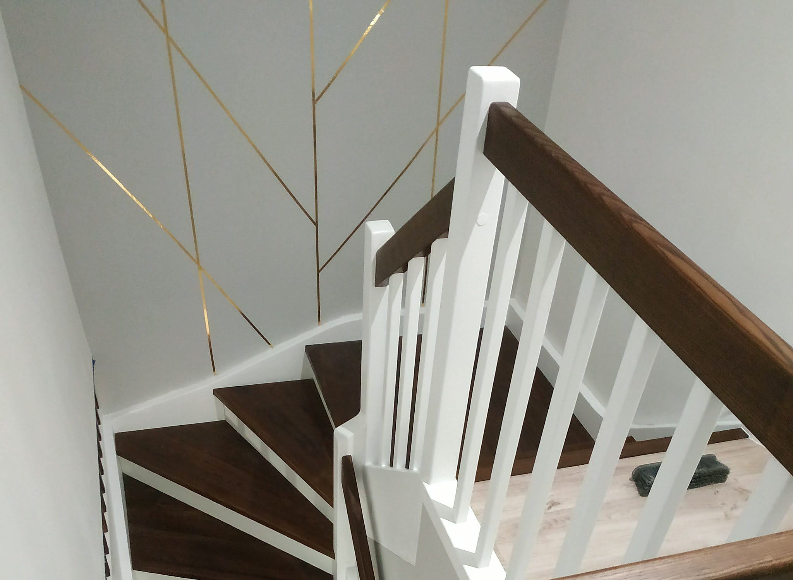
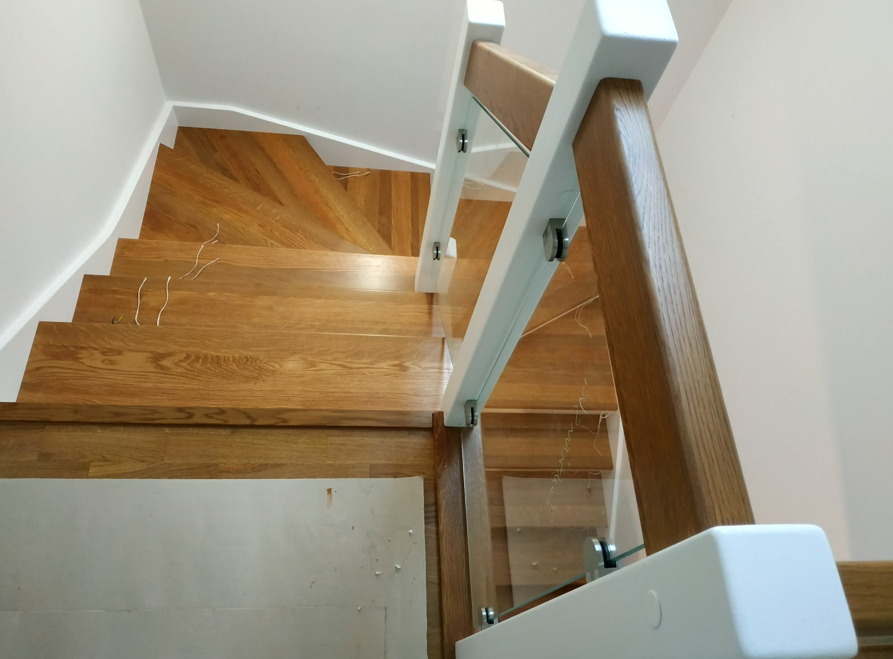
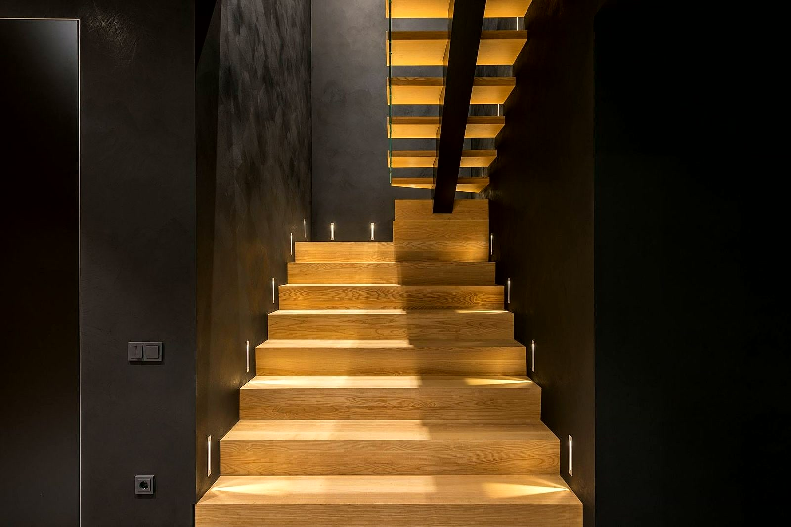
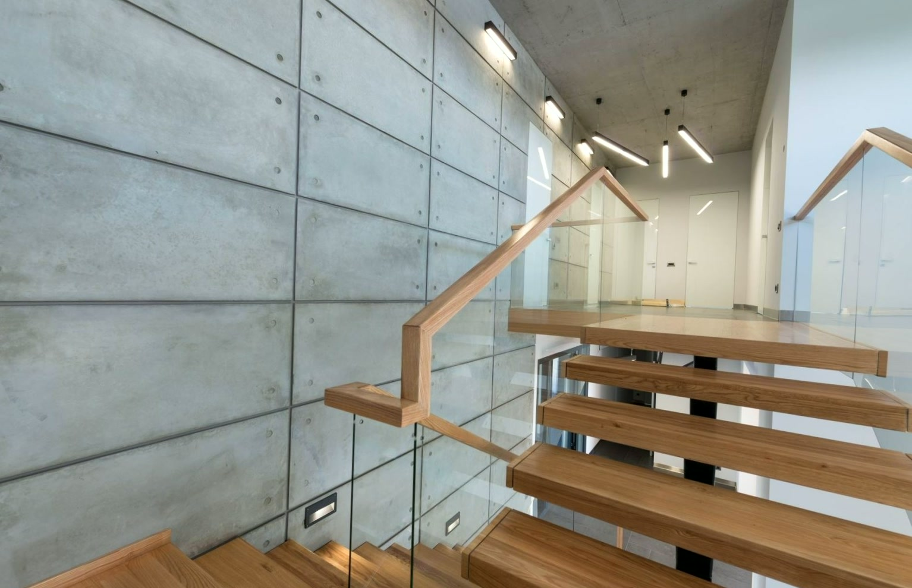
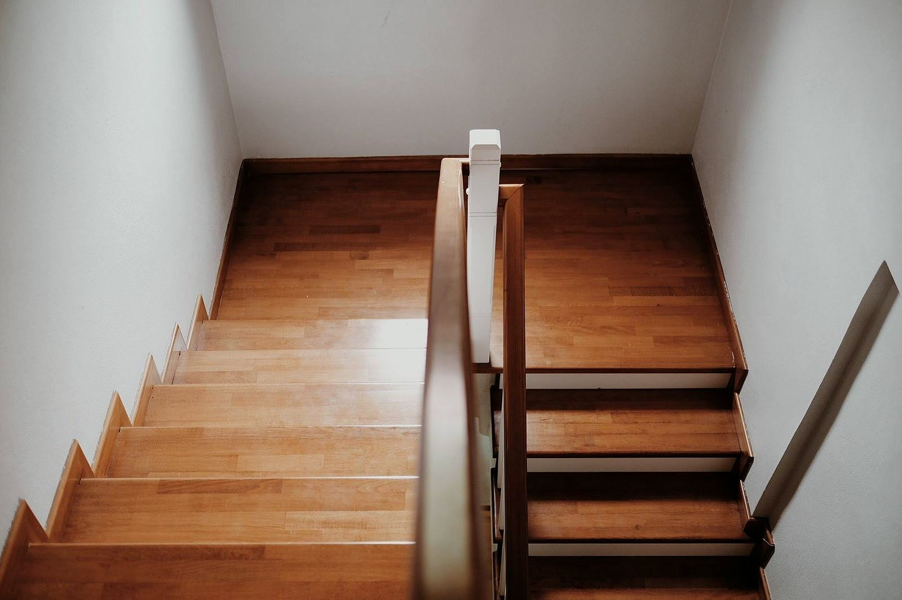
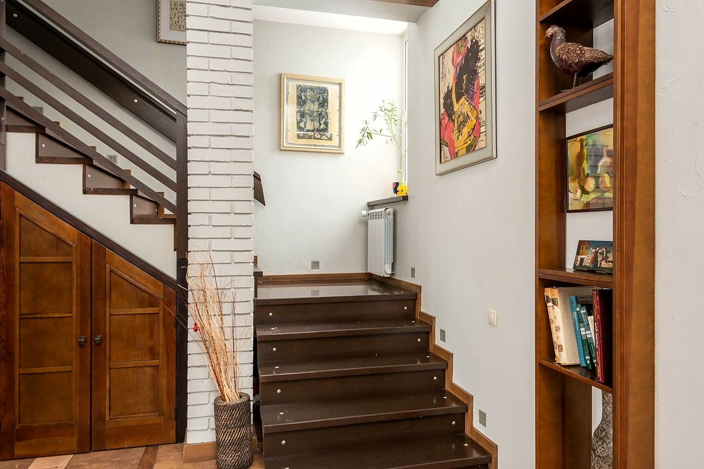

Rodzaje
schodów
Ażurowe, zabiegowe, drewno na betonie i balustrady. Każde schody robimy pod wymiar Twojego domu.

Schody ażurowe na policzkach
Stopnie bez podstopnic, osadzone między dwoma drewnianymi policzkami. Światło przechodzi między stopniami, więc schody nie przytłaczają wnętrza. Dobrze wyglądają przy oknie i jasnej ścianie, a drewno ociepla nowoczesną posadzkę.

Schody zabiegowe z balustradą
Bieg z zakrętem tam, gdzie prosty się nie mieści. Stopnie na zakręcie rozrysowujemy tak, żeby stopa stawała wygodnie. Do tego balustrada z tralkami, białymi albo w kolorze drewna, i drewniana poręcz.

Drewno na schodach betonowych
Masz w domu schody z betonu? Okładamy je drewnem. Beton zostaje jako mocna baza, a pod stopą masz ciepłe stopnie. Wymiar bierzemy na miejscu, bo betonowe stopnie rzadko są równe.

Balustrady: drewno, stal, szkło
Balustradę dobieramy razem ze schodami. Drewniane tralki pasują do klasycznych wnętrz, białe stalowe pręty do ciemnych stopni, a szkło zostawia klatkę schodową jasną. Decyzję podejmujesz przed zamówieniem.

Dobór drewna i wykończenia
Kolor stopni ma grać z podłogą, drzwiami i ścianą. Pomagamy dobrać drewno i wykończenie, a przy okazji podpowiadamy materiały do reszty domu. Klienci wspominają to w opiniach.
Od rozmowy do montażu
Kontakt i ustalenia
Opowiadasz, czego potrzebujesz, a my podpowiadamy, jakie schody pasują do Twojego domu.
Wycena i termin
Dostajesz jasną cenę i termin, zanim cokolwiek ruszy.
Wykonanie i montaż
Robimy na czas i zgodnie z ustaleniami.
Napisz albo zadzwoń, co chcesz zrobić. Odpowiemy z propozycją i wyceną.
Zadzwoń → Napisz do nas